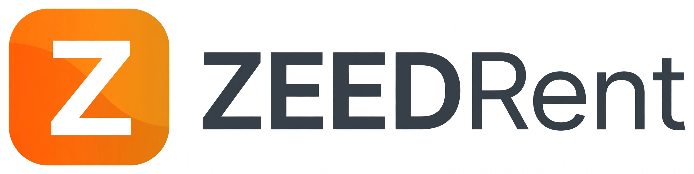

Sewa Alat
▾
Untuk Supplier
▾
Daftarkan Alat Anda
Pasang unit gratis, terima pesanan dari penyewa terverifikasi.
Cara Kerja Supplier
Dari verifikasi armada sampai pencairan pembayaran.
Contoh Profil Supplier
Lihat tampilan profil perusahaan supplier yang bergabung.
FAQ
Pertanyaan umum penyewa dan supplier.
Sales: 0857-1444-7951
Senin-Sabtu · 08.00-17.00 WIB
Jelajahi Alat
ID
▾
Indonesia
English
中文
Masuk / Daftar
Beranda
Katalog
Blog
Supplier
WhatsApp